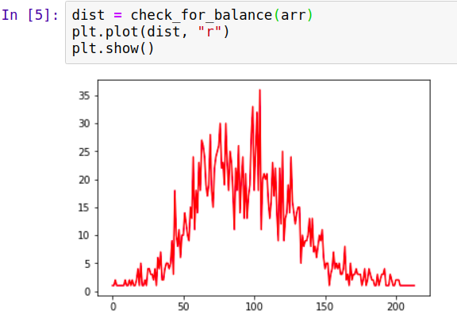
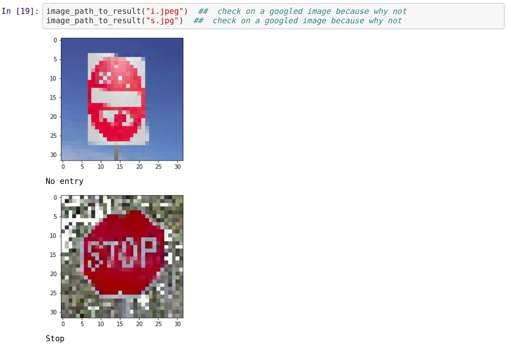
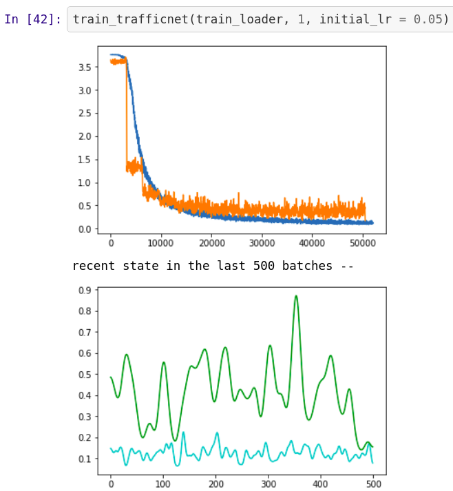

Hi, This is Mayukh
My friends say I'm bad at introducing myself, maybe they're right
I code for fun, I love to learn things by myself and figure out my ways through problems. And the best thing that could happen to me is that I get a chance to collaborate with people who are more capable than me, and make bigger things while learning on the way.

My general interest is towards deep learning and data science. Mostly models which that involve vision related tasks.

The main objective would be to keep improving every day. And make more fun projects involving Computer vision and deep learning.

The model trains upon the RGB images and the x co-ordinate of the mouse (The steering is controlled with the mouse)
The main constraint right now is the unbalanced dataset, which is roughly a bell curve distribution.
It can be seen that it is slighly biased to the left, that's because the track was anticlockwise.

As of now I balanced the lefts and rights by mirroring the images and adding them to the training set with reversed steering values.
Planned: balance the dataset with augmentation. And also collect a lot more training data
The clean dataset gave me time to work on and experiment with stuff like implementing validation sets, batch normalization and dropout layers.
I'm not proud of it, but hey it works fine for me.
 And after all the tweaking and experimentation, I got an accuracy of 91.8%.
Which is not bad at all considering the fact that the model was trained locally.
The trained model reliably predicts between "alpha" and "beta". It was trained on web scraped images. The inputs given were "car" and "dog"
The idea was simple, to automate the collection and preprocessing of data for simple deep learning models.
All that the user does is to type in two key words like "bear" and "potato". The rest is taken care of, from collecting data from google image searches to converting them into labeled arrays and training the model.